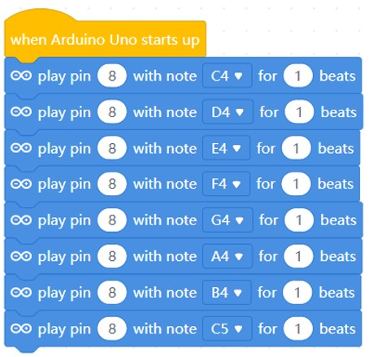
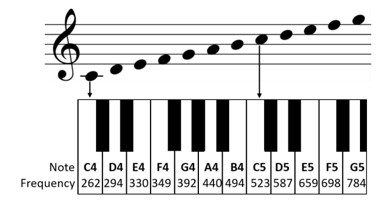
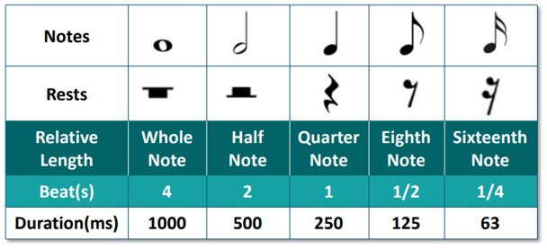

Project 6: Compose Basic Tone
Objective: To program the microcontroller to compose a basic tone.
Before we begin, switch to Upload Mode

Check the switch at the top-left of the microcontroller and make sure it is pushed to the left.
This is to enable the buzzer at pin 8

-
Write the following code and then press
 .
.
-
Does the microcontroller make any sounds? If not, make sure to check if you have flipped the switch to turn on the buzzer.
-
The buzzer on the microcontroller is playing hte basic tone "Do Re Mi Fa So La Ti Do". The diagram below shows the notes that are being played.

-
Different musical notations are used to tell the duration of the note to be played. You can set the duration to be played by changing the value for the beat.

-
Here is a table that shows the connection of the notes to the amount of beats. You will use this as a reference for the next project.

-
For the beats in fraction:
- 1/2 is equal to 0.5 beats
- 1/4 is equal to 0.25 beats
Challenge
Try increasing the speed of the song by changing the duration(beats) of each notes.
Once completed, inform your teacher to check your progress.